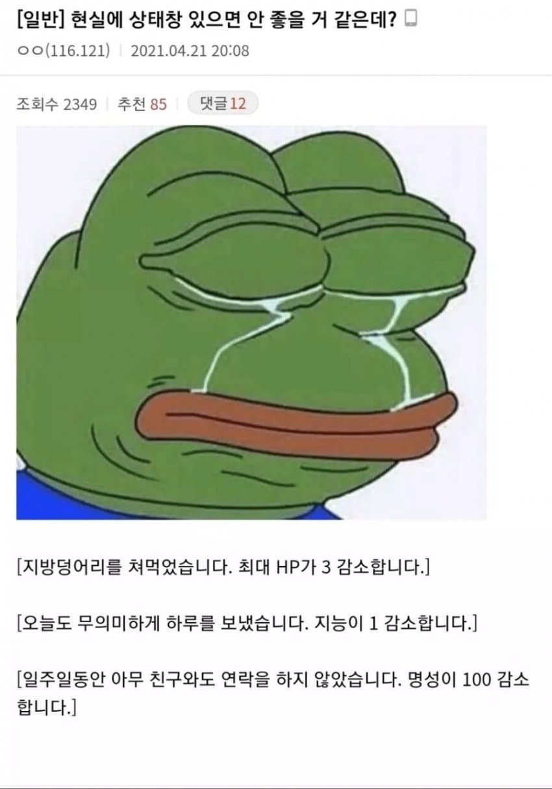
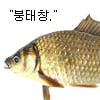

[숨을 쉬었습니다. 잔고가 0.1% 감소합니다.]
[주식으로 인해. 잔고가 60% 감소합니다.]
[주식으로 인해. 잔고가 10% 추가 감소합니다.]
[주식으로 인해. 잔고가 10% 추가 감소합니다.]

[숨을 쉬었습니다. 잔고가 0.1% 감소합니다.]
[주식으로 인해. 잔고가 60% 감소합니다.]
[주식으로 인해. 잔고가 10% 추가 감소합니다.]
[주식으로 인해. 잔고가 10% 추가 감소합니다.]
푸쉬 알림 해제함. 해제 안 하면, 매일 매일이 죽고 싶어짐
그런 닉 달고 그러면 숙연해지는데... 진짜야...?
선생님 닉네임이 어쨰서..?
그러네 ㅋㅋ
{성좌-분노한 눈초리의 부장} 이 당신을 주시합니다!!
c급 스킬 '눈치' 발동 실패!!
[평판이 10 감소합니다]
상태창 있으면 살은 안찌겠다ㅋㅋㅋ
ㅋ?
음식 먹을때마다 xxx칼로리가 흡수되었습니다.
라고 실시간으로 뜨면 많이 못먹을거 같은데ㅋㅋ
나약한놈
자기 자신에게 한없이 관대해질수 있는게 사람이다
살태창!!!!

'입사하실 분들은 여기 오셔서 상태창 열어서 제출하세요'
아
로그아웃!
xx나이가 될때까지 이성친구가 없습니다. (풋)
상태 이상 : 동정
[일주일 째 아네로스를 빼지 않았습니다. 암컷 타락의 진행률이 3% 상승 합니다.]
아네로스를 착용하였습니다. 스트레스가 10 감소합니다
상태인상 : 찐따
여자의 호감을 사서 성기가 1cm 늘어났습니다
상태창 있으면 저걸 피하려고하겠지
근피로도 확인좀하자
12시간 연속 공부 성공.
지능이 0.001 상승합니다.
개좆망한 재능에 절망하게 되어있음 ㅋㅋㅋ
NPC한테는 상태창이 없어.
인벤토리는 상태창이 아니야
반대로 운동 좀만 해도 '근력이 증가했습니다' 같은 메시지 보면 재밌을거 같은데
엄마 - [F] 적대시하기
- (해골)
주식 하는 애들은 관심종목 등록하면 폰 푸쉬 알림으로 비슷한 거 매일 보고 있을 걸? ㅋㅋㅋㅋㅋㅋㅋㅋㅋㅋㅋㅋㅋㅋㅋ